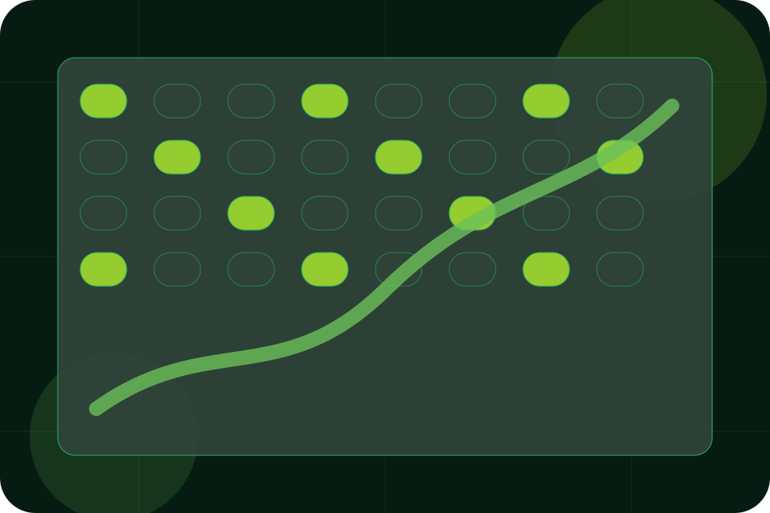

Resources / 01
Resources by Field
Resources shaped for agriculture, farming & rural business decisions.
Resources opens as a clear agriculture decision hub: what Field offers, who it helps, why it matters, and which route to take first.
The first screen combines positioning, proof, primary action, and fast internal navigation, so people can act immediately or compare the rest of the resources route with context.
Agriculture scopeCompare optionsRequest advice
Deep-green grow room hero
Plan the season
Select the closest route and Field keeps the next step, proof, and follow-up expectation aligned with seasonal timing and trust.

Resources / 02
Seasonal
Seasonal gives researching visitors a practical route into guides, checklists, and comparison material without leaving the site structure.
Each resource behaves like a useful internal link, giving cold and warm visitors a way to learn, compare, and return to the action path.
Explore ResourcesA useful entry point for visitors who need more context before they plan a visit.
A scannable comparison aid that makes research usable before the next decision.
A route back to support, services, or contact when the visitor is ready to act.
Resources / 03
Crops
Crops gives researching visitors a practical route into guides, checklists, and comparison material without leaving the site structure.
Each resource behaves like a useful internal link, giving cold and warm visitors a way to learn, compare, and return to the action path.
Explore Resources- 01
Guide
A useful entry point for visitors who need more context before they plan a visit.
- 02
Checklist
A scannable comparison aid that makes research usable before the next decision.
- 03
Questions
A route back to support, services, or contact when the visitor is ready to act.
Resources / 04
Livestock
Livestock gives researching visitors a practical route into guides, checklists, and comparison material without leaving the site structure.
Each resource behaves like a useful internal link, giving cold and warm visitors a way to learn, compare, and return to the action path.
Explore ResourcesField structures livestock around guide, checklist, and a clear next route so visitors can compare the block quickly before they plan a visit.
Plan VisitResources / 05
Compliance
Compliance gives the proof layer for resources: standards, evidence, and reassurance that make the next decision feel grounded.
Instead of relying on vague claims, Field presents visible standards, process cues, and proof artifacts that help agriculture visitors judge fit.
Explore ResourcesEvidence
Visible proof that helps visitors believe the claims behind compliance.
Resources / 06
Checklists
Checklists gives researching visitors a practical route into guides, checklists, and comparison material without leaving the site structure.
Each resource behaves like a useful internal link, giving cold and warm visitors a way to learn, compare, and return to the action path.
Explore ResourcesGuide
A useful entry point for visitors who need more context before they plan a visit.
Checklist
A scannable comparison aid that makes research usable before the next decision.
Questions
A route back to support, services, or contact when the visitor is ready to act.
Resources / 07
Downloads
Downloads gives researching visitors a practical route into guides, checklists, and comparison material without leaving the site structure.
Each resource behaves like a useful internal link, giving cold and warm visitors a way to learn, compare, and return to the action path.
View ResourcesA useful entry point for visitors who need more context before they plan a visit.
A scannable comparison aid that makes research usable before the next decision.
A route back to support, services, or contact when the visitor is ready to act.
Field downloads guide
A useful entry point for visitors who need more context before they plan a visit.
Open resourceField downloads checklist
A scannable comparison aid that makes research usable before the next decision.
Open resourceField downloads brief
A route back to support, services, or contact when the visitor is ready to act.
Open resourceResources / 08
Updates
Updates gives researching visitors a practical route into guides, checklists, and comparison material without leaving the site structure.
Each resource behaves like a useful internal link, giving cold and warm visitors a way to learn, compare, and return to the action path.
Explore ResourcesGuide
A useful entry point for visitors who need more context before they plan a visit.
Checklist
A scannable comparison aid that makes research usable before the next decision.
Questions
A route back to support, services, or contact when the visitor is ready to act.
Resources / 09
Learn
Learn gives researching visitors a practical route into guides, checklists, and comparison material without leaving the site structure.
Each resource behaves like a useful internal link, giving cold and warm visitors a way to learn, compare, and return to the action path.
Explore ResourcesGuide
A useful entry point for visitors who need more context before they plan a visit.
Checklist
A scannable comparison aid that makes research usable before the next decision.
Questions
A route back to support, services, or contact when the visitor is ready to act.
Resources / 10
Plan Visit
Field closes the resources route with a clear action, a quick reminder of the value, and a low-friction way to plan a visit.
Visitors who are ready can use the primary action. Visitors who are still comparing can scan the section links, proof, and support routes before they plan a visit.
Plan VisitThe final block keeps the choice simple: act now, compare one more proof route, or send enough detail for a focused response.
Plan Visitseasonal timing and trust
Plan Visit
A controlled-agriculture site with vertical growing surfaces, yield metrics, season planning, and visit routes. Resources ends with a direct path to plan a visit, plus enough context for visitors who still need to compare.
Notes
Information is provided for planning and should be reviewed for the final client, location, and operating rules.